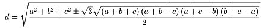

Triángulo equilátero a partir de distancias a los vérticesUtiliza los controles de la línea inferior para ver la construcción paso a paso. ¿Cuando hay dos soluciones, una o ninguna? Con ayuda del teorema del coseno puede mostrarse que las distancias y el lado de del triángulo verifican la relación sorprendentemente simétrica 3(a4 + b4 + c4 + d4) = (a2 + b2+ c2 + d2)2. O resolviendo la ecuación bicuadrada, para por ejemplo d: Aquí se demuestra y se hace un pequeño estudio del caso en que las cuatro distancias sean enteras y el punto interior al triángulo: DistTriEqui.pdf. Curiosamente, 1729 (número de Hardy-Ramanujan) es el mínimo lado entero de un triángulo equilátero para el que hay tres conjuntos de puntos interiores no equivalentes a distancias enteras de sus vértices: {211, 1541, 1560}, {195, 1544, 1591} y {824, 915, 1591}. Utilizando las flechas del teclado en combinación con la tecla [Mayús], empleando decimales, pueden comprobarse, así como las demás soluciones enteras relacionadas al final de DistTriEqui.pdf Cuando las tres distancias constiuyen una terna pitagórica, hay un método alternativo más simple para el cálculo del lado: Lado de un triángulo equilátero a partir de distancias pitagóricas a los vértices Ignacio Larrosa Cañestro (Grupo XeoDin), 11 junio 2015. Creado con GeoGebra Página principal |